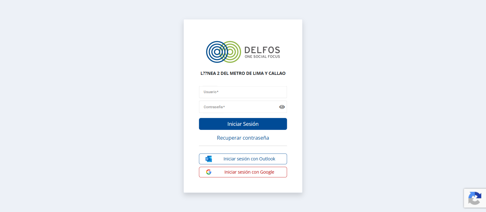
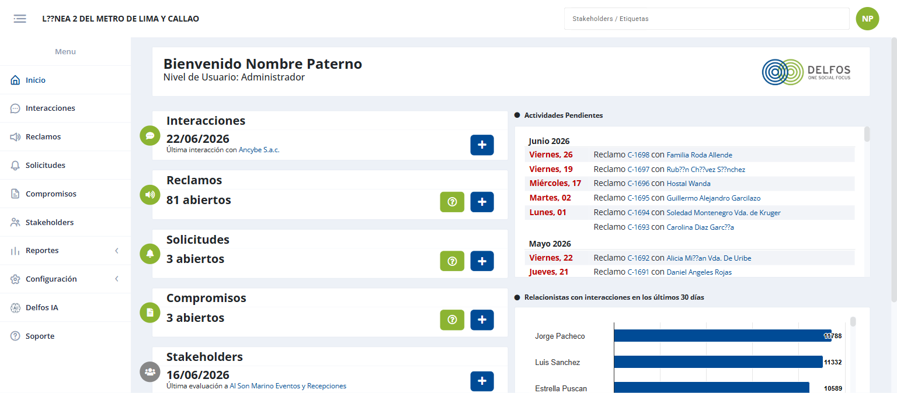
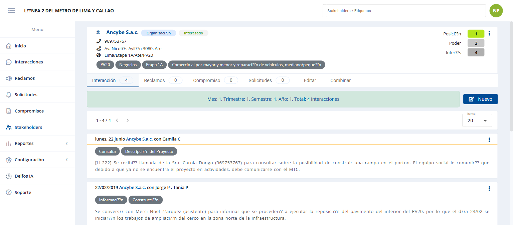
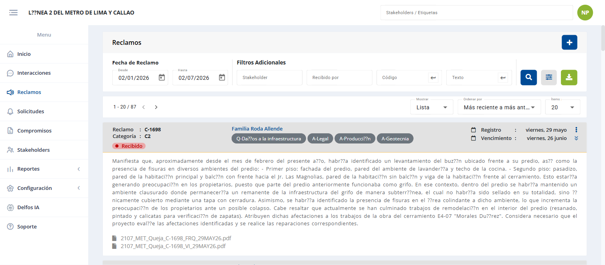
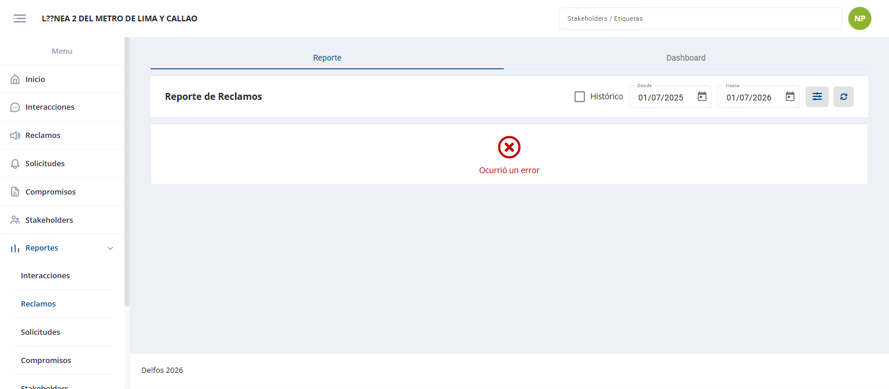

Bienvenido a Delfos
Esta guía te acompañará en tus primeros pasos con Delfos, el sistema para gestionar la relación de tu proyecto con la comunidad y sus grupos de interés. No necesitas conocimientos técnicos: aquí aprenderás qué hace cada parte del sistema y cómo realizar las tareas del día a día.
¿Qué es Delfos y para qué lo usarás?
Empieza aquí si es tu primera vez
Delfos es una plataforma web donde tu equipo registra y da seguimiento a todo lo que ocurre con los stakeholders del proyecto: las personas, familias, negocios e instituciones del entorno. Cada conversación, queja, pedido y acuerdo queda guardado en un solo lugar, ordenado y disponible para todo el equipo.
Con Delfos podrás, principalmente:
- Mantener un directorio de stakeholders con toda su información y su historia.
- Registrar las interacciones (visitas, llamadas, correos) que tienes con ellos.
- Atender reclamos y solicitudes con un flujo claro de principio a fin.
- Llevar el control de los compromisos acordados con la comunidad.
- Ver reportes y hacer consultas con IA para tomar mejores decisiones.
Recorrido rápido de esta guía
Ingresar al sistema
Tu primer paso cada día
Es la puerta de entrada a Delfos. Aquí confirmas tu identidad para acceder a la información de tu proyecto de forma segura.

1 2 3 4Paso a paso Iniciar sesión
- 1Abre en tu navegador el enlace que te entregó el administrador de tu proyecto.
- 2Escribe tu usuario y tu contraseña.
- 3Haz clic en Iniciar Sesión. Entrarás directamente a la pantalla de Inicio.
Conocer la pantalla
Aprende a moverte por Delfos
Toda pantalla de Delfos tiene la misma estructura. Una vez que la reconoces, sabrás moverte por cualquier módulo.

1 2 3 4 5El menú lateral
Es tu punto de partida para todo. Estos son los módulos que encontrarás:
| Menú | Lo usas para… |
|---|---|
| Ver un resumen del proyecto y tus pendientes. | |
| Registrar y consultar contactos con stakeholders. | |
| Atender quejas de la comunidad. | |
| Gestionar pedidos y requerimientos. | |
| Dar seguimiento a los acuerdos. | |
| Consultar el directorio de grupos de interés. | |
| Ver gráficos y estadísticas. | |
| Administrar el sistema (solo administradores). | |
| Hacer preguntas al asistente inteligente. |
Conceptos clave
El vocabulario que se repite en todo Delfos
Todo en Delfos gira en torno al stakeholder. A partir de él se registran cuatro tipos de gestiones. Entender estos cinco conceptos es entender el sistema completo.
Módulo Inicio
Tu punto de partida cada día
Te da una foto rápida del estado del proyecto y te muestra qué tienes pendiente, para que sepas por dónde empezar.
¿Qué puedes hacer aquí?
- Ver de un vistazo cuántos reclamos, solicitudes y compromisos están abiertos.
- Saber cuál fue tu última interacción y tu última evaluación de stakeholder.
- Revisar el listado de actividades pendientes, ordenado por fecha.
- Saltar directamente a un reclamo o a la ficha de un stakeholder haciendo clic en su nombre.
Módulo Stakeholders
El directorio y la historia de cada grupo de interés
Es el corazón de Delfos. Aquí encuentras a cualquier stakeholder y, al abrir su ficha, ves absolutamente todo lo que se ha hecho con él.
 1
2
3
4
1
2
3
4
La ficha del stakeholder
Al hacer clic en un stakeholder abres su ficha: el lugar donde se concentra toda su información e historia, organizada en pestañas.

1 2¿Qué puedes hacer aquí?
- Buscar a cualquier stakeholder por nombre o etiqueta.
- Consultar toda su historia: interacciones, reclamos, solicitudes y compromisos, en las pestañas de su ficha.
- Editar sus datos desde la pestaña Editar.
- Combinar dos fichas cuando un mismo stakeholder fue registrado dos veces por error.
- Registrar un nuevo stakeholder cuando aparece un actor que aún no está en el sistema.
Módulo Interacciones
El registro de todo contacto con la comunidad
Guarda cada contacto que el equipo tiene con un stakeholder. Así queda constancia de qué se conversó, cuándo y con quién.
 1
2
3
1
2
3
¿Qué puedes hacer aquí?
- Registrar una interacción nueva (una visita, llamada, correo o mensaje).
- Buscar interacciones pasadas para consultar qué se dijo.
- Adjuntar evidencias como fotos o actas a cada interacción.
- Exportar las interacciones a Excel para informes.
Módulo Reclamos
Atención de quejas de principio a fin
Te ayuda a atender las quejas de la comunidad siguiendo un proceso ordenado, sin que nada quede sin respuesta. Cada reclamo tiene un código único (por ejemplo C-1698) para identificarlo.

1 2 3El camino de un reclamo
Todo reclamo avanza por estas etapas hasta cerrarse:
¿Qué puedes hacer aquí?
- Registrar un reclamo nuevo cuando alguien presenta una queja.
- Hacer avanzar el reclamo por sus etapas: evaluarlo, proponer una solución y responder.
- Gestionar una apelación si el stakeholder no queda conforme.
- Cerrar el reclamo cuando queda resuelto.
| Estado | Qué significa |
|---|---|
| Abierto | Recibido y en atención. |
| En evaluación | Se está analizando si procede. |
| Con propuesta | Ya hay una solución propuesta. |
| En apelación | El stakeholder pidió revisar la respuesta. |
| Cerrado | Resuelto y finalizado. |
Módulo Solicitudes
Pedidos y requerimientos de la comunidad
Gestiona los pedidos que hacen los stakeholders y que no son quejas: pedir información, un permiso, acceso a una zona, etc.

¿Cuándo uso Solicitud y cuándo Reclamo?
| 📣 Reclamo | 📝 Solicitud | |
|---|---|---|
| Es… | Una queja por una afectación. | Un pedido o requerimiento. |
| Ejemplo | “Se agrietó mi pared por la obra.” | “Quiero visitar la estación.” |
Módulo Compromisos
Seguimiento de los acuerdos con la comunidad
Lleva el control de los acuerdos que el proyecto asume con los stakeholders y de las acciones concretas (entregables) que hay que cumplir.

¿Qué puedes hacer aquí?
- Registrar un compromiso acordado con un stakeholder.
- Definir sus entregables: las acciones concretas, con su fecha y responsable.
- Dar seguimiento al avance y marcar lo que se va cumpliendo.
- Cerrar el compromiso cuando todo se completó.
Tareas frecuentes — Cómo hacer…
Las acciones del día a día, paso a paso
Tarea Buscar un stakeholder
- 1En la barra superior, haz clic en el buscador .
- 2Escribe el nombre (o una etiqueta) y selecciónalo de la lista que aparece.
- 3Se abrirá su ficha con toda su información.
Tarea Consultar el historial de un stakeholder
- 1Abre la ficha del stakeholder (búscalo o entra desde ).
- 2Usa las pestañas de la ficha: Interacción, Reclamos, Compromiso o Solicitudes.
- 3El número junto a cada pestaña te dice cuántos registros hay. Haz clic para verlos.
Tarea Registrar una interacción
- 1Entra a (o abre la ficha del stakeholder y su pestaña Interacción).
- 2Haz clic en el botón de nueva interacción.
- 3Indica con quién fue el contacto, cómo fue (visita, llamada, correo…) y cuándo.
- 4Escribe qué se conversó y adjunta evidencias si las tienes.
- 5Guarda. La interacción queda registrada en el historial del stakeholder.
Tarea Dar seguimiento a un reclamo
- 1Entra a .
- 2Busca el reclamo por su código, por el stakeholder o por fecha.
- 3Ábrelo y realiza la acción que corresponda a su etapa: evaluar, proponer, responder o cerrar.
Tarea Exportar información a Excel
- 1En cualquier módulo, aplica primero los filtros para quedarte solo con lo que necesitas.
- 2Haz clic en el botón de descarga ⬇️.
- 3Elige qué descargar (Datos o Evidencias) y confirma.
- 4El archivo se prepara y se descarga solo. Puedes seguir trabajando mientras tanto.
Tarea Cerrar sesión
- 1Haz clic en tu usuario, arriba a la derecha.
- 2Elige Cerrar sesión. Hazlo siempre si usas una computadora compartida.
Reportes
Gráficos y estadísticas para entender el proyecto
Convierte la información registrada en gráficos fáciles de leer. Te ayuda a ver tendencias y preparar informes sin hacer cálculos a mano.
En encontrarás un panel para cada módulo. Estos son algunos:



¿Qué puedes hacer aquí?
- Ver gráficos del avance de interacciones, reclamos, solicitudes, compromisos y stakeholders.
- Filtrar por período para analizar un rango de fechas específico.
- Exportar la información para tus presentaciones e informes.
Exportar a Excel
Llevarte la información fuera del sistema
Te permite descargar en un archivo Excel la información que ves en pantalla, para compartirla o trabajarla fuera de Delfos.

- Datos — descarga la información en una hoja de Excel.
- Evidencias — descarga los archivos adjuntos (fotos, actas, documentos).
Delfos IA
Pregúntale al sistema en tus propias palabras
Es un asistente que responde preguntas sobre la información del proyecto. En lugar de buscar entre listados, simplemente le preguntas.
 1
2
3
1
2
3
Paso a paso Hacer una pregunta
- 1Entra a .
- 2Escribe tu pregunta en palabras normales, incluyendo alguna palabra clave del sistema (interacción, reclamo, stakeholder…).
- 3Presiona Enviar y lee la respuesta. Puedes seguir preguntando en la misma conversación.
Ejemplos de preguntas
| Puedes preguntar cosas como… |
|---|
| ¿Cuántos reclamos abiertos están por vencer en los próximos 7 días? |
| ¿Qué stakeholders tuvieron más interacciones en junio? |
| ¿Cuántas interacciones se registraron el mes pasado? |
| ¿Cuáles son los canales de comunicación más usados? |
Configuración
Solo para administradores
Permite ajustar el sistema al proyecto: crear etiquetas, definir ubicaciones, gestionar usuarios y otros parámetros. Solo está disponible si tienes rol de administrador.

| Sección | Te permite… |
|---|---|
| 🏷️ Etiquetas | Crear las categorías con que se clasifican stakeholders, interacciones y reclamos. |
| 📍 Locaciones | Definir la estructura geográfica del proyecto (regiones, distritos, zonas). |
| ⚙️ General | Ajustar parámetros generales como idioma, logo y notificaciones. |
| 👤 Usuarios | Crear cuentas, asignar roles y activar o desactivar accesos. |
Roles de usuario
Qué puede hacer cada persona
Lo que ves y puedes hacer en Delfos depende de tu rol. Si te falta una opción, probablemente tu rol no la incluye: consúltalo con tu administrador.
| Rol | Qué puede hacer |
|---|---|
| Administrador | Todo, incluida la Configuración y la gestión de usuarios. |
| Relacionista | Registrar y gestionar en todos los módulos, y ver reportes. No accede a Configuración. |
| Consulta | Solo ver información. No puede crear ni modificar. |
Glosario
Términos que verás en el sistema
| Término | Significado |
|---|---|
| Stakeholder | Persona, familia, negocio o institución del entorno del proyecto. |
| Interacción | Un contacto con un stakeholder (visita, llamada, correo…). |
| Reclamo | Una queja formal. Se identifica con un código C-XXXX. |
| Solicitud | Un pedido o requerimiento que no es una queja. |
| Compromiso | Un acuerdo del proyecto con la comunidad. |
| Entregable | Una acción concreta que forma parte de un compromiso. |
| Relacionista | La persona del equipo que gestiona la relación con los stakeholders. |
| Etiqueta | Una categoría que se asigna a los registros para clasificarlos y buscarlos. |
| Ficha | La pantalla que reúne toda la información e historia de un stakeholder. |
| Evaluación | La valoración de la posición de un stakeholder frente al proyecto. |